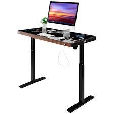
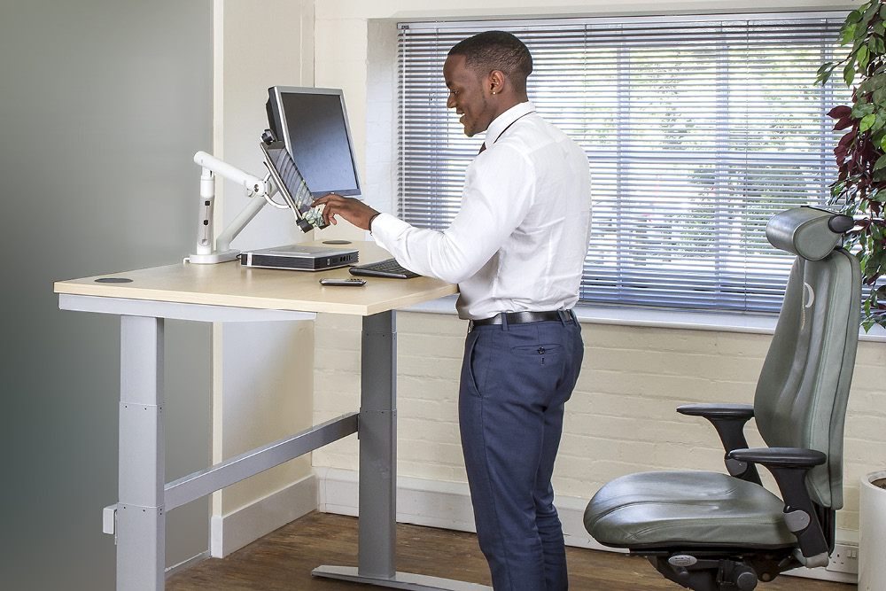
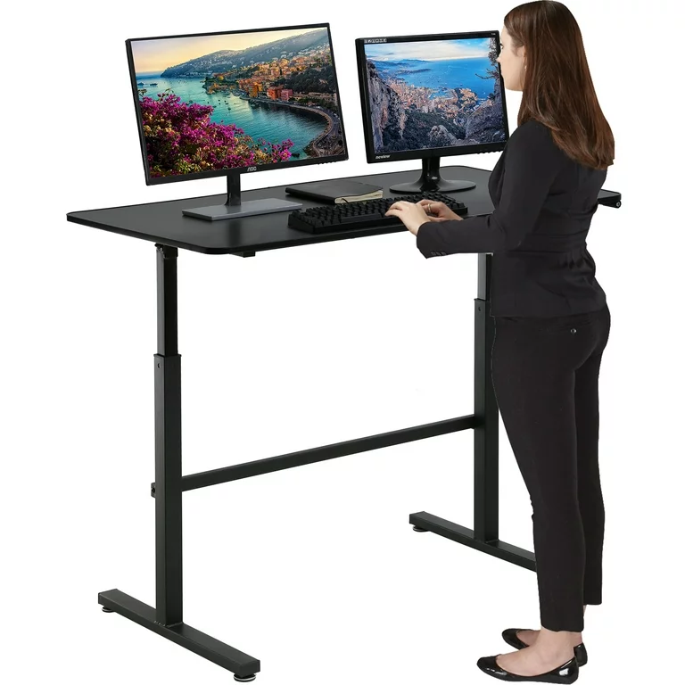
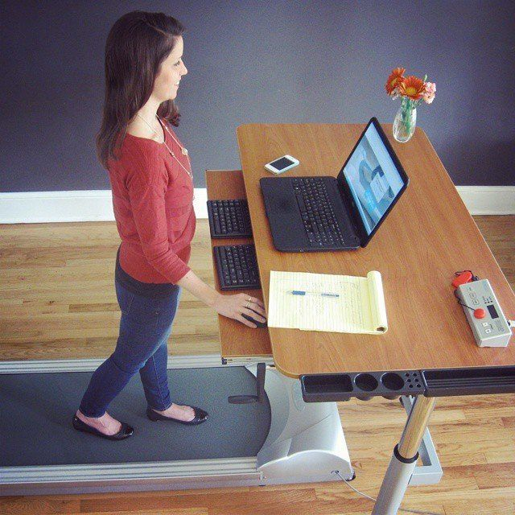
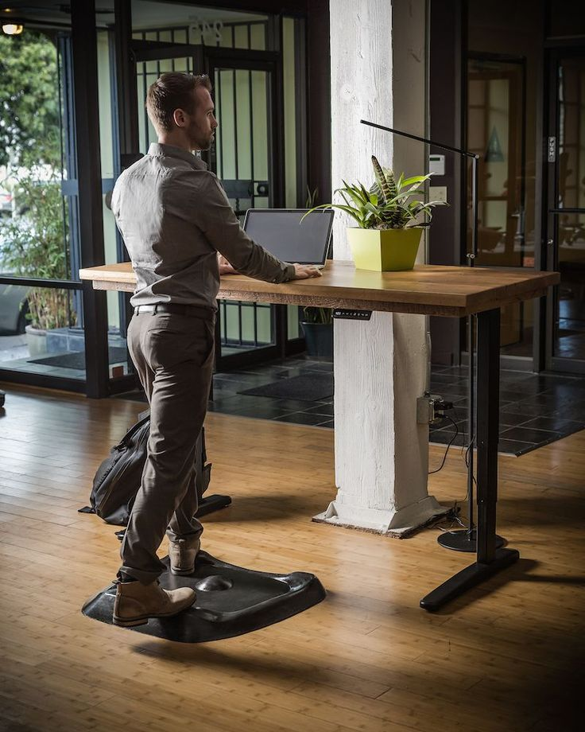
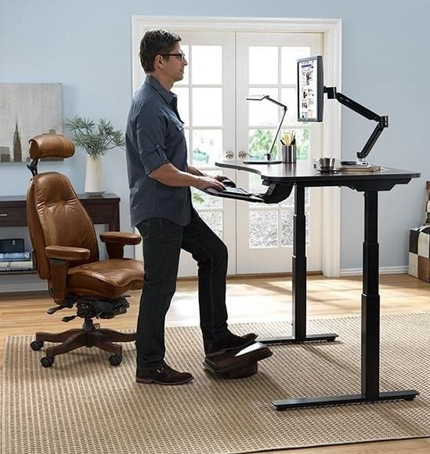
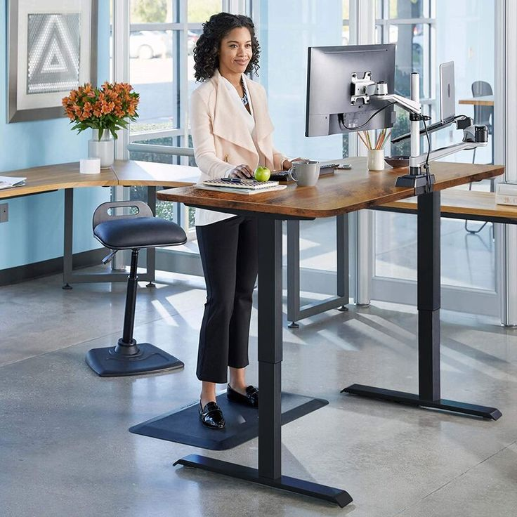
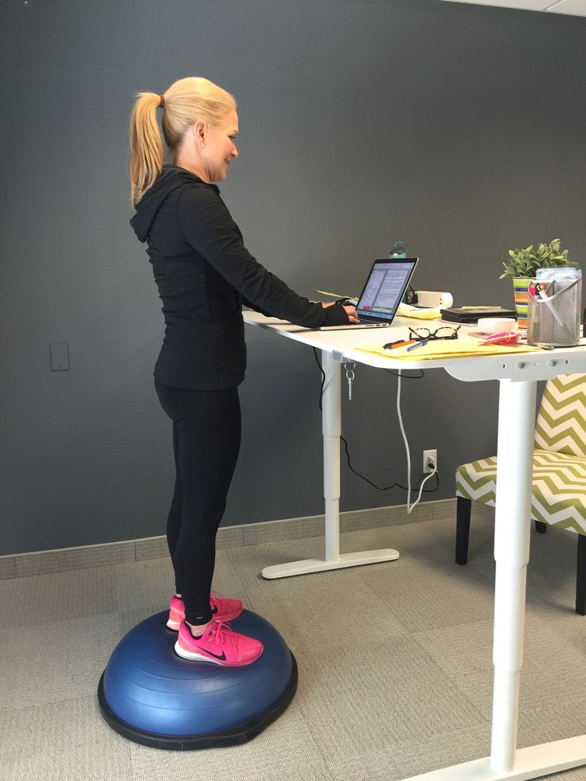

Before delving into the advantages, let's explore what a standing desk entails. Standing desks, also known as adjustable standing desks or sit-stand desks, provide the flexibility to comfortably work in a standing position, particularly when using a computer. Many contemporary versions of standing desks are adaptable, either through manual adjustments or electronic controls. This allows users to seamlessly transition between sitting and standing positions based on the demands of the moment. Advanced standing desks often include a memory feature for preset desk heights. This enables users to conveniently set preferred desk heights in advance and effortlessly switch between those heights with a simple push of a button. Now that we have a brief understanding of standing desks, let's delve into the remarkable benefits they offer.
Embracing a standing work routine can elevate your productivity—a phrase any employer would welcome. A study involving 146 NHS staff members who switched to standing desks revealed improved work engagement and fewer musculoskeletal issues after just 12 months. The subtle shift from a sedentary work life to standing proved to be a catalyst for increased focus and energy. Complementing a standing desk with an anti-fatigue mat can further enhance productivity by mitigating foot and leg discomfort during extended standing sessions. Potential for Weight Management and Obesity Prevention: The correlation between weight gain and prolonged sitting is well-established. Standing for an additional three hours daily over a year can burn up to 30,000 extra calories, equivalent to shedding eight pounds of fat. This calorie expenditure surpasses what traditional sitting accomplishes and contributes to maintaining a healthier weight.
Back pain, prevalent among office workers, is a consequence of prolonged sitting. Intermittent standing breaks in the routine have shown significant reductions in upper back and neck pain, as reported by 54% of workers. As little as one hour of standing per day can yield remarkable benefits in preventing and alleviating back discomfort.
Standing engages multiple muscles, promoting the strengthening of the core, legs, ankles, and feet. Correct posture is paramount for these benefits, emphasizing the importance of standing correctly. Incrementally integrating standing into your routine, with a focus on maintaining proper posture, can lead to improved muscle tone, posture, and even an increased metabolism.
...
Elevated blood sugar levels pose health risks, making it crucial to adopt practices that regulate glucose throughout the day. Replacing sitting with standing or light activity has been shown to reduce average blood sugar levels. Just two and a half hours of standing daily can contribute to this positive outcome, particularly effective when done after consuming lunch.
...
The phrase "sitting is the new smoking" underscores the negative effects of prolonged sitting on heart health. Research has demonstrated a significant increase in cardiovascular events for those who sit excessively compared to those who maintain greater movement. Standing interrupts the sedentary pattern, promoting better blood flow and reducing the risk of heart disease.
...
Sitting for extended periods has been linked to an increased risk of depression and anxiety. Conversely, utilizing sit-stand desks has been associated with heightened mood and energy levels. Studies conducted between March and May 2011 revealed that users of sit-stand desks reported improved mood states, underlining the positive impact on mental well-being.
...
Utilizing a standing desk with proper ergonomics helps maintain better posture, reducing strain on the spine and supporting core strength. Over time, the right posture becomes second nature, alleviating discomfort associated with extended sitting.
...
Standing not only burns more calories than sitting but also encourages subtle movements and breaks throughout the day. This contributes to increased caloric expenditure over time, fostering a more active and energized lifestyle.
...
 Conclusion: